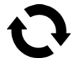
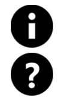

Bienvenido a la tragamonedas virtual "FURIA DE LOS DIOSES". Un juego ambientado con la mitología griega que incluye funciones adicionales de Ira de Dioses, Giros adicionales, Giros gratis y mucho más.
ACERCA DEL JUEGO
Furia de los Dioses es un juego de tragamonedas en una cuadrícula de 5x5 y cada carrete muestra cinco símbolos.
FUNCIÓN DE JUEGO PRINCIPAL
Esta función se activa de manera aleatoria en giros sin ganancias. Cada dios tiene una habilidad única que ayuda a crear combinaciones ganadoras.
Zeus: ALGUNOS SÍMBOLOS QUE FORMAN COMBINACIONES NO GANADORAS SE TRANSFORMAN EN OTRO SIMBOLO PARA FORMAR UNA COMBINACIÓN GANADORA.
Poseidón:ALGUNOS SÍMBOLOS GANADORES SON REEMPLAZADOS POR SÍMBOLOS GANADORES PARA FORMAR UNA COMBINACIÓN GANADORA.
Hades:TODOS LOS SÍMBOLOS GANADORES SE TRANSFORMAN EN SÍMBOLOS COINCIDENTES PARA FORMAR UNA COMBINACIÓN GANADORA Y ACTIVAR LOS REGIROS.
EL DIOS ACTIVO CAMBIARÁ DESPUÉS DE CADA GIRO REALIZADO.
FUNCIÓN DE IRA DE DIOSES
Con cada giro se señalará un punto de 1x3, el cual puede ser horizontal o vertical. La función ira de dioses se activa cuando los tres dioses están ubicados en las 3 posiciones del punto. El comodín se puede usar como parte de esta combinación. Durante esta función, los dioses se turnan en el uso de sus poderes. No se puede volver a activar esta función. LA FASE FURIA DE DIOS NO PUEDE ACTIVARSE DURANTE LOS GIROS GRATIS.
FUNCIÓN DE GIRO ADICIONAL
Se otorgan 6 o más símbolos iguales asegurados y 2 giros adicionales. Todos los carretes con símbolos diferentes vuelven girar. Durante los giros adicionales, nuevos símbolos iguales y comodines se aseguran para añadirse a agrupaciones de símbolos iguales y crear mayores ganancias. Cualquier símbolo igual o comodín, sea que incremente la ganancia o no, reinicia el contador de giros adicionales. NO SE GANARÁN REGIROS POR LOS PREMIOS MEJORADOS MEDIANTE LOS DIOSES ZEUS Y POSEIDÓN. PUEDEN BLOQUEARSE MÚLTIPLES COMBINACIONES GANADORAS.
VUELTAS GRATIS
6, 7, 8, 9, 10 o más símbolos dispersos generan 5, 8, 10, 12 y 20 giros gratis respectivamente. Elige un dios antes de un giro adicional. El dios seleccionado se mantiene activo para usar sus poderes en cada giro que no genere ganancias. DURANTE LOS GIROS GRATIS PUEDEN GANARSE REGIROS.
CÓMO JUGAR
-
Seleccione su denominación de apuesta / moneda.
-
Haga clic en (para escritorio) o toque (para dispositivos móviles) el botón Girar (Spin) para iniciar un ciclo de juego.
BOTONES DEL JUEGO
|
Icono |
Escritorio |
Dispositivo móvil |
Acción |
|
 |
Girar | Girar | Inicia un ciclo simple |

|
Apuesta máxima | (contenida en la pantalla de selección de apuesta en el menú de configuración) | Establece la configuración de apuestas en el nivel máximo de apuesta. Botón Girar presionado para iniciar. |
|
|
Juego automático | Mantenga presionado el botón Girar para entrar en juego automático (o la opción contenida en el menú de configuración) | Muestra la pantalla del menú con todas las opciones de juego automático disponibles en el juego para iniciar múltiples ciclos simultáneamente. |
|
|
Selección de apuesta | Selección de apuesta (o la contenida en el menú de configuración) | Muestra las Opciones de apuesta para que el jugador seleccione el nivel de su apuesta. |
|
|
Menú de configuración | Menú de configuración | Abre una pantalla de configuración separada que ofrece lo siguiente: Inicio; Audio; Configuraciones de juego; Historial; Información / Ayuda y Cajero (donde se requiera) |
|
|
Audio | (El área principal de configuración está disponible en el menú de configuración) | Escritorio: abre el menú de configuración de audio para permitir que el reproductor active o desactive la música o los efectos de forma independiente. |
|
|
Turbo Play | (disponible en el Menú de configuración del juego) | Inicia un cambio en la velocidad de los cilindros para un Quickspin |
BOTONES DE CONFIGURACIÓN
| Símbolo | Icono | Comportamiento |
| Cajero |
|
Inicia el regreso a las páginas de depósito de un operador para que el jugador agregue fondos a su cuenta (suponiendo que la función esté disponible en el sistema del operador). |
| Tabla de pagos y Ayuda |  | Detalla las tablas de pagos generales y las descripciones de las características del juego. |
| Historial del juego |
|
Muestra al jugador una lista de ciclos de juego jugados durante esa sesión de juego. |
| Configuración de apuesta |
|
Desde aquí, el jugador puede determinar el valor de apuesta para el juego o hacer una selección de otras opciones disponibles. |
| Juego automático |
|
Inicia la página desde la cual se pueden seleccionar e iniciar las diversas opciones de juego automático, extendido y estándar, incluyendo los límites de pérdida (cuando corresponda). |
| Configuración de juego |
|
Muestra las diversas opciones de configuración generales disponibles (por ejemplo, los ajustes de audio que el jugador puede seleccionar para determinar qué sonidos desea que se reproduzcan durante la sesión). |
| Inicio |
|
Sale de la sesión de juego actual (después de un aviso final) y regresa la pantalla a las páginas del Menú principal de juego de los operadores. |
OTRA INFORMACIÓN DEL JUEGO
-
Combinaciones ganadoras en agrupaciones diversas se suman y se pagan al jugador.
-
Valor de moneda: muestra el premio de apuesta teórico de la configuración actual. Todos los triunfos se muestran en monedas que se deben multiplicar por el valor de la moneda para convertirla en una ganancia en efectivo.
-
Apuesta: muestra el valor de la apuesta de la configuración actual. El valor de la apuesta es de 1 moneda multiplicada por el multiplicador de apuestas.
-
LA APUESTA TOTAL ES EL VALOR DE LA MONEDA MULTIPLICADO POR EL MULTIPLICADOR DE APUESTA, QUE ES DE 40 MONEDAS.
-
Apuesta máxima (SOLO para computadora de escritorio): establece el valor de la moneda al mayor disponible.
-
Botón Girar: inicia el juego Cuando los cilindros giran, el botón Girar se transforma en el botón Turbo Stop. Presione el botón Turbo Stop para detener los cilindros de inmediato.
-
Juego automático: puede configurar el juego para jugar sin necesidad de presionar a cada vez el botón Girar. Elija el número de vueltas de juego automático presionando el botón Juego automático (o manteniendo presionado el botón Girar para abrir el menú de juego automático (para dispositivos móviles)). En la Configuración de juego podrá elegir, cuando corresponda, condiciones adicionales sobre cuándo detener el juego automático. En algunas versiones del juego, el límite de pérdida evita que pierda por encima del límite establecido durante la sesión de juego automático Para detener el juego automático de forma manual, presione el botón Detener juego automático.
-
Triunfo: muestra la ganancia para el triunfo actual o para el último ganado.
-
Efectivo / Moneda: muestra el saldo de su cuenta en Efectivo (valor monetario) o Monedas (número de créditos) según la opción del jugador. La pantalla predeterminada es Efectivo.
-
La conversión de efectivo a moneda y viceversa se realiza con 2 valores decimales para lograr los valores originales más cercanos. Sin embargo, en el juego, las conversiones de moneda siempre se mostrarán en números enteros.
RENDIMIENTO PARA EL JUGADOR
-
El rendimiento general teórico para el jugador es 96.41%.
INFORMACIÓN ADICIONAL
-
Todas las combinaciones ganadoras se pagan en una combinación de seis o más símbolos iguales.
-
Las ganancias obtenidas en las funciones adicionales se pagan sumadas a las combinaciones ganadoras.
-
En caso de mal funcionamiento del hardware / software del juego, todas las apuestas y pagos afectados se anulan y todas las apuestas afectadas se reembolsan.
-
El triunfo máximo del juego tiene un límite máximo de equivalente €250,000.
-
Esta es la versión 1.0 de las reglas del juego, con fecha 07/07/2020.